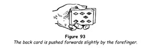
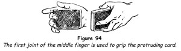
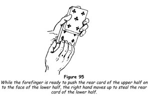
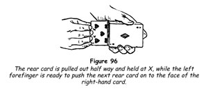
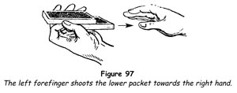
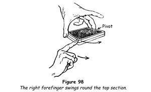
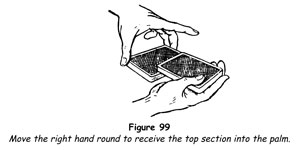
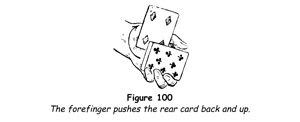
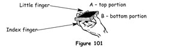

Colour Change
The name given to this sleight is a misnomer; it really is the mysterious change of one card for another regardless of suit. The sleight has been termed the colour change for so long, however, that we shall continue to use the name for the sake of conformity.
Almost all methods of performing the sleight involve the palming of cards. The method we give you is one of the easiest and best.
1. Hold the pack in the left hand, the card faces towards the audience, with the thumb at the top side, the middle, ring and little fingers at the lower side, and the index finger curled behind the pack and out of sight.
2. Raise the right hand; cover the pack for a moment, curling the top phalanxes of the fingers over the outer end; remove and drop the hand. Repeat this once or twice as you comment on the curious properties of this particular pack. These are feints to cover the palm which you will make in a moment.
3. Cover the cards with the right hand once more, and at the same time push out the rear card 6 mm (½ in) with the left index finger (figure 93).

4. Curl the right fingers over the outer end as before, and grip the edge of the protruding card in the top phalanx of the middle finger (figure 94).

5. Move the right hand outwards and downwards, taking the rear card with it. Close the right middle, ring and little fingers slightly and the card will buckle into the palm, where it can be retained while the right forefinger points to the face card of the deck. At the same moment place the left index finger at the outer end of the pack, squaring it should this be necessary.
6. Bring the right hand up to the pack, simulating the action of your previous feints, depositing the palmed card at the face of the pack. Without hesitation, move the right hand downwards, as though wiping the cards, and reveal that the card at the face has mysteriously changed. Neatly done, the illusion of a transformation is perfect.
7. A very amusing bit of byplay that always evokes laughter is to move the right hand to the right side of the body after the change, curling the fingers awkwardly and extending the thumb at right angles from the hand. The audience assumes that you have palmed a card from the face of the pack and sometimes demands that you show your right hand. When this happens, affect to misunderstand, raise your right hand with its palm outwards, and point with the forefinger at the face card, saying, 'You see the card has changed,' as if you thought they hadn't noticed it.
You should never appear deliberately to sell the onlookers. They don't like it and may take their revenge on you at an awkward moment.
Double Colour Change
In this transformation, two cards change simultaneously.
1. Take the pack in your left hand, holding it as for the colour change with the faces of the cards to the spectators.
2. Move the upper half so that it projects for about half of its length beyond the lower portion.
3. Call attention to the two cards, the faces of which can be seen. Place the right hand over the cards, concealing both packets, once or twice.
4. Palm the bottom card of the upper packet as described under the colour change, bring the right hand downwards below the pack and again call attention to the two face cards (figure 95).

5. Bring up the right hand and deposit its card on the face of the upper packet. At the same moment engage the rear card of the upper packet with the tip of the left index finger and push this card inwards until it is flush with the lower packet.
6. Remove the right hand and show that both cards have changed.
The Changing Card
In this intriguing conclusion to a trick, one card changes to another before the spectator's eyes. The change is useful when concluding another 'location' feat.
1. Have a selected card replaced and control it to a position second from the top of the pack, using any method of control that has been previously described.
2. Facing left, hold the pack in the left hand face outwards as for the colour change, the sides of the pack parallel to the floor. Draw the top card inwards towards yourself with the right thumb and fingers, so that about half its length projects and everyone can see its face. Secretly engage the outer end of the second card, the spectator's card, with the tip of the left index finger.
3. Tap the projecting card with the tips of the right fingers and claim that it is the spectator's card. When this is denied, move the right hand back to grasp the protruding card at the points marked X in figure 96.

4. An instant before the extreme tips of the right fingers and thumb grasp the protruding card, push the second card inwards towards yourself and flush with the protruding card, by a swift thrust of the left index finger. Close the right fingers and thumb on both cards at their ends, keeping them in alignment. Instantly withdraw the right hand a few inches so that the full face of the changed card is visible. The effect is that the protruding card visibly changes into the chosen card.
5. Place the cards, as one card, face outwards on the face of the deck.
Self-cutting Deck
1. Hold the pack in the left hand with the tips of the middle, ring and little fingers at one side and with the thumb at the other. Place the index finger against the lower half of the pack at the outer end (figure 97). Hold the pack with its sides parallel to the floor.

2. Snap the index finger inwards sharply, propelling the lower portion into the right hand, which is held against the body about 15 cm (6 in) from the pack, back upwards, thumb and fingers separated ready to catch the flying packet.
A Pretty Cut
1. Hold the pack in the left hand, between the middle and ring fingers at one end and the thumb at the other. The cards are held from above, the palm arching above the pack. Place the right index finger at the inner right corner (figure 98).

2. Lift and swing the upper half in a semicircle outwards, the other end pivoting on the left second finger, continuing the movement until the packet drops into the right palm (figure 99). Drop the other packet on top.

This is a genuine cut and a pretty one.
Pop-up Card
Here is an amusing way of revealing a chosen card that has been brought to the top of the pack.
1. Hold the pack in the left hand, face outwards, with the thumb lying flat along the upper side, with the middle, ring and little fingers at the other side, and with the index finger curled up against the top card at the rear.
2. Separate the end of the top card from the other cards with the tip of the left index finger. Request that the chosen card be named; when it is, snap your right fingers, saying, 'Card, rise!'
3. Press inwards and then upwards on the card with the left index finger, making it turn between the ball of the thumb and the pack until it swings into the position shown in figure 100.

A Bit of Byplay
Incidental bits of business that are done offhand are sometimes remembered when more pretentious effects are forgotten. For this reason, minor byplay should be used whenever possible. You should always give the impression that you do these things on the spur of the moment.
The following is a good trick of this type.
1. Double-lift the two cards at the top of the pack and show them as one. Replace them on the pack, take the top indifferent card and, without showing its face, thrust it quickly into the centre of the pack.
2. Hold the deck in the left hand in readiness for the colour change. Tap the card at its face. Pass the hand over the pack once or twice, and finally make the colour change, depositing at the face of the pack the card that should be at the middle.
A trick of this type should be played down. In other words, such occurrences are so common with you that you do not even think this one important enough to comment upon.
Charlier Cut
The Charlier cut (also known, improperly we think, as the Charlier pass) is often treated as a fancy flourish, for it has an undoubted fascination for the layman. It is of far greater value, however, when used as a method of openly controlling cards, and we shall discuss it in that light.
1. Hold the pack in the left hand at the sides, between the tips of the thumb and the ring and middle fingers, with the tips of the index and little fingers pressing up against the face card (figure 101).

2. Allow the lower half to fall from the thumb on to the palm of the hand (figure 102). Press upwards against this packet with the tips of the index and little fingers, moving the pack into the position shown in figure 103.
3. Allow the other portion to sink down on to the palm by slightly extending the middle and ring fingers, with the index finger at first supporting it but moving out of the way as the packet nears the palm and the original lower portion folds downwards on top of it.
4. Square the cards by moving the index finger beyond the outer end.
Acrobatic Aces
The Charlier cut is put to good use in this surprising feat with cards.
1. Place the ace of hearts at the bottom and the ace of diamonds at the top of the pack, then spread the pack face upwards, showing that there are only the two red aces in the pack.
2. Gather the cards, turn them face downwards, and in squaring them bend them rather sharply downwards; or you can spring them into your left hand if you prefer. Seize the pack between the right fingers and thumb at the ends and riffle the upper half upwards at the outer end, commenting that the cards are well mixed and showing them. What you have done is bend the lower portion downwards, the upper portion upwards, for a reason which will be apparent in a moment.
3. Hold the pack in position for the Charlier cut and with the right fingers draw away the bottom ace and hold it up for all to see, but as you do this make the Charlier cut without completing it, holding the original bottom packet up a little with the left thumb. You will do this unnoticed, because you have misdirected the attention of everyone to the ace which you show. Drop this ace face downwards on the top of the original upper portion, and allow the original lower portion to fall on it, squaring the cards.
If you glance at the pack at this point (as you practise) you will see that there is a crosswise bridge in the deck, which you placed there when you bent and riffled the cards at the start. If you now make a second Charlier cut, the pack will split at this bridge.
4. Now take whatever card is at the top of the pack and hold it up with its back to the audience, miscalling it the ace of diamonds. As you do this make another Charlier cut, splitting the pack at the bridge. Prevent the lower packet from dropping on the upper packet as you did before. Saying, 'The ace of diamonds also goes somewhere in the middle,' drop the indifferent card on the lower packet, and allow the other packet to drop off your thumb and on to it, squaring the pack.
'Now my trick is this,' you continue. 'The aces have been placed somewhere in the middle of the pack, but they are acrobatic aces and if you give the pack a little shake like this [here you take the cards by a corner and give them a shake] they somersault back to their original positions.'
5. Lift the top card and show that it is the ace of diamonds, then turn the pack and show the ace of hearts back at the bottom.
Once the Charlier cut has been mastered, the trick itself is practically self-working.